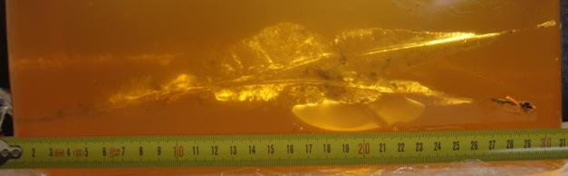

Поражающие свойства пули
Поражающие свойства пули — различные характеристики, в совокупности определяющие поражающую способность пули огнестрельного оружия, то есть способность пули наносить повреждения цели (как живой, так и неживой) при попадании в неё..
Проникающая способность, пробивное действие (пробивная способность) — способность пули проникать сквозь преграду. Определяется путём, пройденным пулей по баллистической траектории в преграде (то есть внутри цели после попадания в неё). Зависит от импульса (массы и скорости), особенностей конкретного типа пули (геометрии, материала, конструкции и др.), а также от баллистической устойчивости (способности пули сохранять без изменения своё положение) при движении внутри цели. Очень высокой проникающей способностью обладают пули к крупнокалиберным винтовкам и пулемётам, которые могут применяться для стрельбы по лёгкой бронетехнике (БТР, самолёты, вертолёты и проч.).
